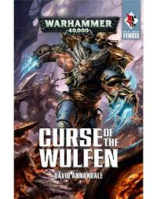
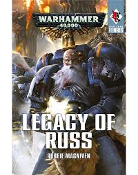

Boek 1: Curse of the Wulfen 
Schrijver: David AnnandalePublicatiejaar: 2016 Het verhaal: De Wulfen van de 13e Compagnie zijn niet meer gezien sinds de dagen dat Leman Russ aan het hoofd van zijn Legioen stond. Nu, te midden van alarmerend grote invallen van daimonen komen ze terug om aan hun zijde te vechten. Terwijl de Grote Compagnies van de ruimte doorzoeken om hun terugkerende voorouders te verzamelen, beginnen steeds meer strijdbroeders van de Space Wolves ten prooi te vallen aan mysterieuze veranderingen. Is de terugkeer van de Wulfen echt een zegen van Russ, of zullen de duistere voortekens die Harald Deathwolf kwellen de Space Wolves verdoemen
Boek 2: Legacy of Russ 
Schrijver: Robbie MacNivenPublicatiejaar: 2016 Het verhaal: Logan Grimnar is dood, dat zeggen de dienaren van de Dark Gods. Terwijl de Great Company van Egil Iron Wolf de onderwereld van Midgardia doorzoekt voor tekenen van de High King, wordt het hele Fenris-systeem omgeven door een enorme daimonische invasie. De Space Wolves worden overrompeld, maar ze vechten als de helden uit de sagen om de eindeloze vloed van Warpgebroed af te wenden. Wanneer schepen van meer dan een dozijn andere Space Marines Chapters aankomen in het oorlogsgebied is echter het onduidelijk of zij de Space Wolves gaan redden of executeren. De hoogste keizerlijke autoriteiten hebben geruchten gehoord dat de Space Wolves gevaarlijke mutanten binnen hun gelederen hebben; wilde genetische afwijkingen die niet beter zijn dan wat de wezens van de Empyrean hebben. Terwijl de lijn tussen vriend en vijand gevaarlijk vervaagt, moeten de Wolven van Fenris niet alleen blijven vechten voor het voortbestaan van hun Chapter, maar ook van hun ziel.